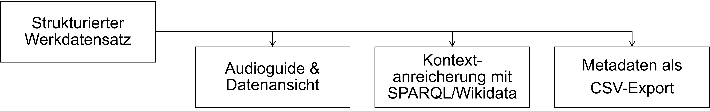
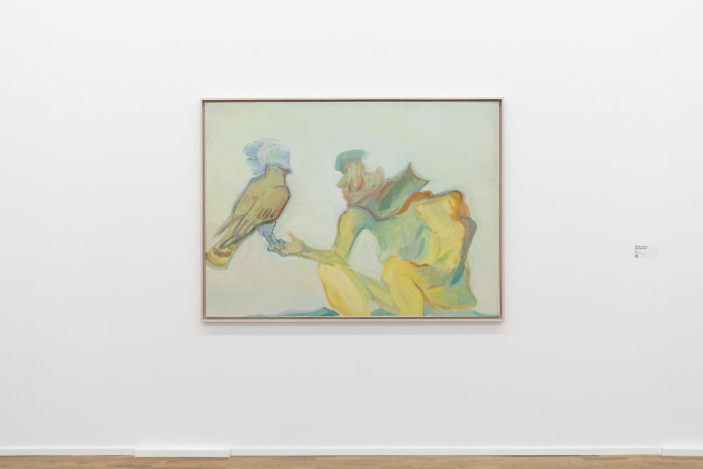

Daten
Die Werkdaten des Prototyps wurden anhand der Minimaldatensatz-Empfehlung für Museen und Sammlungen (MDS v1.1) strukturiert. Das Datenmodell des Prototyps wurde dabei an die Anforderungen des Projekts angepasst.
Ein wichtiger Schritt war dabei die Aufteilung der einzelnen Informationen in eigene Datenfelder, um die Inhalte innerhalb der Anwendung flexibel nutzen zu können. So basieren die Audioguide- und Datenansicht, die Wikidata-Anbindung und der Metadatenexport auf demselben Werkdatensatz.
Dafür wurden die Werkdaten innerhalb von Interkit in einer gemeinsamen Tabelle aufbereitet.

Beispiel Die Falknerin

Die folgende Tabelle zeigt einen Auszug aus dem Werkdatensatz zu Maria Lassnigs Die Falknerin:
| Feld | Feldname | Wert |
|---|---|---|
| Objekttitel oder -benennung | objectTitle | Die Falknerin |
| Personenname | person | Maria Lassnig |
| Personenidentifier | personID | GND-URI zu Maria Lassnig |
| Frühestes mögliches Datum | earliestDate | 1979 |
| Spätestes mögliches Datum | latestDate | 1979 |
| Inhaltsschlagwort | subjectKeyword | Wikidata-URI zu Falkenartige; Wikidata-URI zu Falkner; Wikidata-URI zu Falknerei |
Herkunft der Daten
Die Inhalte und Daten der Anwendung beruhen auf unterschiedlichen Quellen. Audioguide und Transkripte wurden aus dem bestehenden Ausstellungsguide des MGKSiegen übernommen. Die Werk- und Objektdaten basieren auf Angaben aus dem Ausstellungsguide, der Begleitpublikation des MGKSiegen (Schiefer et al. 2025) sowie eigener Recherche. Die Werkbeschreibungen wurden im Rahmen der Masterarbeit auf Grundlage der Begleitpublikation neu verfasst. Auch die Strukturierung und Ergänzung der Werkdaten sowie die Zuordnung von Normdaten und kontrollierten Vokabularen erfolgten im Rahmen der Masterarbeit. Die englischsprachigen Texte des Ausstellungsguides wurden mit Unterstützung von DeepL aus den deutschen Texten erstellt und geprüft.
Kontrollierte Vokabulare und Normdaten
Für die Aufbereitung der Werkdaten im Prototyp wurden kontrollierte Vokabulare und Normdaten eingesetzt. Soweit möglich, wurden Objekttyp, Personendaten, Materialien, Techniken, Motiv und Institution mit persistenten URIs verknüpft. Im Datensatz werden sowohl menschenlesbare Bezeichnungen als auch die entsprechenden URIs verwendet.
Die folgende kontrollierte Vokabulare und Normdaten wurden im Datensatz verwendet:
- Gemeinsame Normdatei (GND) für Personendaten, Institutionen
- Art & Architecture Thesaurus (AAT) für Objekttyp, Material, Technik
- Wikidata für Motiv
- LIDO-Terminologie für Ereignistyp, Datensatztyp
Wie wurden die kontrollierten Begriffe verwendet?
Maria Lassnig Die Falknerin
Angabe: Öl auf Leinwand
FORT Archiv der Sorgen
Angabe: Pneumatische Raben, Säcke gefüllt mit Zeitung, Lautsprecher und Kabel
- Die spezifische Materialkombination lässt sich durch kontrollierte Begriffe nur eingeschränkt abbilden.
Bei Maria Lassnigs Die Falknerin lassen sich Material und Technik mit kontrollierten Begriffen aus dem AAT referenzieren. Bei ungewöhnlichen Materialkombinationen wie in FORTs Archiv der Sorgen reichen solche Referenzen nicht aus, um die Zusammensetzung der Materialien vollständig zu beschreiben.
Externe Wissensressourcen
Der Prototyp verwendet GND- und Wikidata-Referenzen zur Verknüpfung mit externen Wissensressourcen. Über selbst entwickelte Interkit-Komponenten werden ausgewählte Kontextinformationen mit Hilfe von SPARQL-Abfragen aus Wikidata abgerufen.
Beispiel für die SPARQL-Abfrage zum Motiv bei Maria Lassnigs Die Falknerin
Bildrechte entsprechend der Angaben auf Wikidata. Nicht unter CC BY-SA 4.0 lizenziert.
Was ist für die Verknüpfungen zu beachten?
Welche Informationen abgerufen werden, hängt einerseits von der lokalen Verschlagwortung und andererseits von der Qualität der externen Quelle ab. Eine Übereinstimmung zwischen Motiven bedeutet nicht zwangsweise einen kunsthistorisch aussagekräftigen Vergleich. Daher müssen die externen Daten fachlich geprüft und eingeordnet werden.
Nachnutzung
Die strukturierten Werkdaten werden im Prototyp als CSV-Datei bereitgestellt. Dadurch ist eine weitere Nutzung auch außerhalb der Anwendung möglich. Eine eigene RDF-/LOD-Publikation oder eine öffentliche Schnittstelle wurde im Rahmen des Projekts nicht umgesetzt.
Download der Metadaten-CSVLizenz der bereitgestellten Metadaten: CC0 1.0